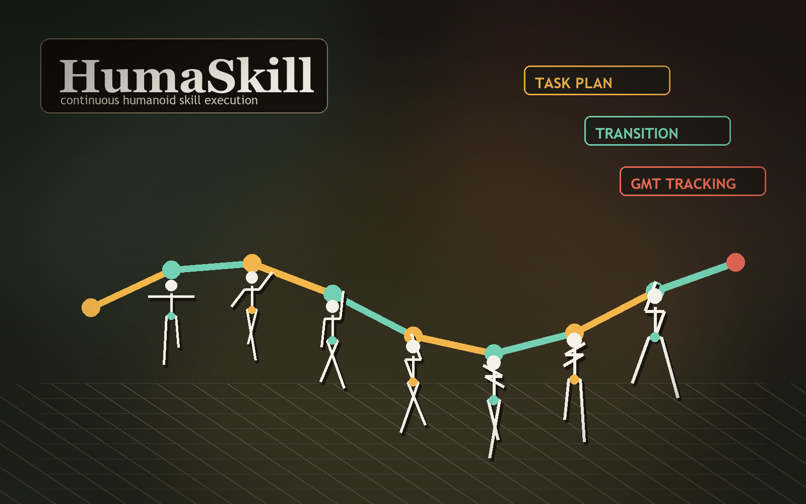

Task Plan
Reads YAML skill sequences and validates every semantic skill against the registry.
GMT-based humanoid control harness
A three-layer execution harness that chains semantic humanoid skills into one continuous MuJoCo episode without resetting the robot state.

Current project effect
The harness parses a fixed skill plan, selects GMT reference motions, inserts transition references, and tracks every segment in the same live simulator state.
Architecture
Reads YAML skill sequences and validates every semantic skill against the registry.
Loads GMT motion clips, slices references, matches skills, and builds transition segments.
Wraps GMT as an importable runner and tracks consecutive references without resetting MuJoCo.
Execution log
The recorded run contains four skills and three transitions. Each segment returns a true success flag and no failed reason.
Motion assets
Run locally
Point `configs/harness.yaml` at a valid GMT checkout, then execute the fixed sequence script from the repository root.
python scripts/run_harness_sequence.py